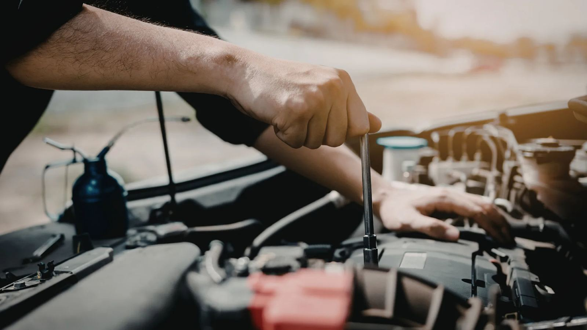

Aracınız için güvenilir oto servis.
Periyodik bakımdan motor tamirine, şanzımandan kaportaya kadar aracınızın her işi tek serviste. Gereken parçayı da biz buluruz.
Yolda mı kaldınız? 7/24 yol yardım: 0538 064 82 05- Ücretsiz ön kontrol
- Garantili işçilik
- Faturalı çalışma
- Adresten araç alma
Pazartesi–Cumartesi 08:00–19:00
İkinci hat: 0535 494 34 00- Fiyat önceden
- Garantili işçilik
- Faturalı çalışma
Şeffaf servis
Ne yapılacağını ve tutarını işe başlamadan söyleriz.
7/24 yol yardım
Gece gündüz arayın: 0538 064 82 05
Cihazla arıza tespit
Hata kodlarını okur, sorunun kaynağını buluruz.
Bakımını ve onarımını yaptığımız markalardan bazıları
Aracınızın her işi tek serviste
Aracınızı getirin, sorunu birlikte bakalım. Ne yapılacağını ve fiyatı işe başlamadan söyleriz.
Periyodik bakım
Yağ, filtreler, buji ve sıvıların değişimi. Bakım sonrası neyin değiştiğini yazılı veririz.
Detaylı bilgi: Periyodik bakımArıza tespit
Motor ışığı yandıysa cihazla arıza kodlarını okur, sorunun kaynağını buluruz.
Detaylı bilgi: Arıza tespitMotor ve mekanik
Motor revizyonu, conta ve yağ kaçakları, motor içi arızalar.
Detaylı bilgi: Motor ve mekanikŞanzıman ve vites
Manuel ve otomatik şanzıman arızaları, vites geçiş sorunları ve yağ değişimi.
Detaylı bilgi: Şanzıman ve vitesFren sistemi
Balata, disk, kaliper ve fren hidroliği. Sesi, titremeyi ve çekmeyi gideririz.
Detaylı bilgi: Fren sistemiLastik ve balans
Lastik tamiri, satışı ve değişimi; balans ayarı.
Detaylı bilgi: Lastik ve balansOto elektrik
Akü, şarj dinamosu, marş motoru, farlar ve kablo arızaları.
Detaylı bilgi: Oto elektrikKlima bakımı
Gaz dolumu, kaçak kontrolü, polen filtresi ve soğutmayan klimanın onarımı.
Detaylı bilgi: Klima bakımıKaporta ve boya
Göçük, çizik ve hasar onarımı; boya ve rötuş.
Detaylı bilgi: Kaporta ve boyaYedek parça
Orijinal ve muadil parça. Stokta yoksa kısa sürede getirtiriz; takmasını da biz yaparız.
Detaylı bilgi: Yedek parça
Neden Çelikel Oto?
- 5,0Google puanı
Müşterilerimizin değerlendirmeleriyle
- 40Yıllık tecrübe
Sebahattin Usta 40 yıldır bu işi yapıyor
- 10+Araç markası
Fiat'tan Toyota'ya, binek araçların çoğuna bakıyoruz
- 7/24Yol yardım
Aracınızı bize bırakmanız için 6 neden
Bakırköy'deki dükkânımızdan beri bize gelen müşterilerimiz, yeni yerimize de gelmeye devam ediyor. Sadece tamir etmiyoruz, aracınızla gerçekten ilgileniyoruz.

Usta kadro
40 yıllık tecrübeİşinizle 40 yıldır bu işi yapan Sebahattin Usta birebir ilgilenir, sorunun kaynağını doğru bulur.
Sürpriz fatura yok
Fiyat öncedenNe yapılacağını ve tutarını işe başlamadan söyleriz; onayınız olmadan başlamayız.
Garantili ve faturalı
Google'da 5,0İşçiliğimize garanti veriyor, faturalı çalışıyoruz. Müşteri yorumlarımızı Google'da okuyabilirsiniz.
Yol yardım hattı
7/24Aracınız yolda kaldıysa 0538 064 82 05 numarasını arayın.
Cihazla teşhis
Önce teşhisArıza tespit cihazıyla hata kodlarını okur, gereksiz parça değiştirmeyiz.
Kapınızdan alırız
Adresten almaVaktiniz yoksa aracınızı adresinizden alır, iş bitince geri getiririz.
Müşterilerimiz ne diyor?
Google'daki yorumlarımızı okuyun; servisimizi bize gelenlerden dinleyin.
Nasıl çalışıyoruz
Aradığınız andan aracınızı teslim alana kadar her adımda ne olduğunu bilirsiniz.
Gereksiz parça değiştirmeyiz. Önce sorunu buluruz, sonra ne yapılacağını size söyleriz.
Arayın ya da yazın
Sorunu kısaca anlatın, size uygun bir gün ayarlayalım.
Aracı getirin ya da biz alalım
Vaktiniz yoksa aracınızı adresinizden alırız.
Sorunu bulup fiyatı söyleriz
Arıza tespitinden sonra ne yapılacağını ve tutarını işe başlamadan bildiririz.
Onayınızla tamir ederiz
İş bitince aracınızı teslim eder, neyin değiştiğini gösteririz.
Servis verdiğimiz markalar
Binek araçların büyük çoğunluğuna bakıyoruz. Markanızı seçin, o markada en sık yaptığımız işleri görün.
- FiatBakım ve onarım
- RenaultBakım ve onarım
- DaciaBakım ve onarım
- VolkswagenBakım ve onarım
- FordBakım ve onarım
- OpelBakım ve onarım
- PeugeotBakım ve onarım
- CitroënBakım ve onarım
- ToyotaBakım ve onarım
- HyundaiBakım ve onarım
- BMWBakım ve onarım
- Mercedes-BenzBakım ve onarım
- AudiBakım ve onarım
Listede olmayan bir marka mı? Arayıp sorun, büyük ihtimalle bakıyoruz.
Gelemiyorsanız aracınızı biz alalım
Aracınızı adresinizden alıyor, işi bitince yine adresinize getiriyoruz. Arayın, uygun günü birlikte belirleyelim.
Sık sorulan sorular
Aradığınız cevabı bulamadıysanız arayın ya da WhatsApp'tan yazın, hemen yardımcı olalım.
Soru sorunÇalışma saatleriniz nedir?
Pazartesiden cumartesiye 08:00–19:00 arası açığız. Pazar günü kapalıyız.
Gelmeden önce randevu almam gerekiyor mu?
Aramanızı öneririz; böylece aracınız için yer ayırır, beklemenizi önleriz. 0542 140 19 74 numarasından arayabilir ya da WhatsApp'tan yazabilirsiniz.
Aracımı adresimden alabilir misiniz?
Evet. Aracınızı adresinizden alıyor, iş bitince yine adresinize getiriyoruz. Uygun günü birlikte belirlemek için bizi arayın.
Fiyatı önceden öğrenebilir miyim?
Evet. Arıza tespitinden sonra ne yapılacağını ve tutarını işe başlamadan söyleriz; onayınız olmadan işe başlamayız.
Motor arıza ışığı yandı, ne yapmalıyım?
Işık sabit yanıyorsa aracı en kısa sürede getirin; yanıp sönüyorsa ya da araç çekişten düştüyse yola devam etmeden bizi arayın. Cihazla hata kodlarını okuyup sorunun kaynağını buluruz.
Yedek parçayı siz mi temin ediyorsunuz?
Evet. Orijinal ve muadil parça seçeneklerini fiyatlarıyla birlikte size söyleriz. Stokta olmayan parçayı kısa sürede getirtiriz.
Hangi markalara bakıyorsunuz?
Binek araçların büyük çoğunluğuna bakıyoruz: Fiat, Renault, Dacia, Volkswagen, Ford, Opel, Peugeot, Citroën, Toyota, Hyundai, BMW, Mercedes-Benz, Audi ve diğer markalar. Aracınızdan emin değilseniz arayıp sorabilirsiniz.
Aracım yolda kaldı, ne yapmalıyım?
Güvenli bir yere çekilip dörtlüleri yakın ve yol yardım hattımızı arayın: 0538 064 82 05. Durumu dinleyip size en hızlı çözümü söyleyelim.
Aracın hangi parçalarına bakıyorsunuz?
Aracın bütün parçalarına bakım ve onarım yapıyoruz: motor, triger, debriyaj, şanzıman, soğutma ve yakıt sistemi, turbo, egzoz, fren, süspansiyon ve direksiyon, lastik ve balans, elektrik, klima ve kaporta. Gereken yedek parçayı da biz temin ediyoruz.
Ustanız ne kadar tecrübeli?
Servisimizi yöneten Sebahattin Usta 40 yıldır bu işi yapıyor. Aracınızla bizzat ilgilenir.
İşçiliğinize garanti veriyor musunuz?
Evet. Yaptığımız işçiliğe garanti veriyoruz; ayrıntıları iş öncesinde size söyleriz.
Fatura veriyor musunuz?
Evet, faturalı çalışıyoruz. Yapılan işler ve kullanılan parçalar faturada ayrıntılı yazar.
Yol yardım hattınız 7/24 açık mı?
Evet. Yol yardım hattımız 0538 064 82 05 günün her saati açıktır ve Küçükçekmece'nin tamamına hizmet veriyoruz.
Hibrit ve elektrikli araçlara bakıyor musunuz?
Evet. Hibrit ve elektrikli araçların bakım, fren, süspansiyon, klima ve elektrik işlerini yapıyoruz.
Garantisi devam eden aracımın bakımını yaptırabilir miyim?
Evet. Bakımı üretici talimatlarına uygun yağ ve parçayla yapar, faturalı olarak belgeleriz. Kesin şartlar için aracınızın garanti kitapçığına da bakmanızı öneririz.
Neredesiniz?
Yarımburgaz, Selvi Sk. 65/1, 34303 Küçükçekmece / İstanbul. Yol tarifi için sayfanın altındaki haritayı kullanabilirsiniz.
Parça sorun, randevu alın
Formu doldurun, mesajınız WhatsApp'ta hazır açılsın. Size sadece gönder'e basmak kalır.
- Doğru parça için aracın marka, model ve yılını yazın.
- Ruhsattaki şasi numarası varsa işimiz daha da kolaylaşır.
- Mesai saatlerinde genelde kısa sürede dönüyoruz.
Bize ulaşın
- Yol yardım / acil0538 064 82 05
- Çalışma saatleriPazartesi–Cumartesi 08:00–19:00
Pazar kapalı